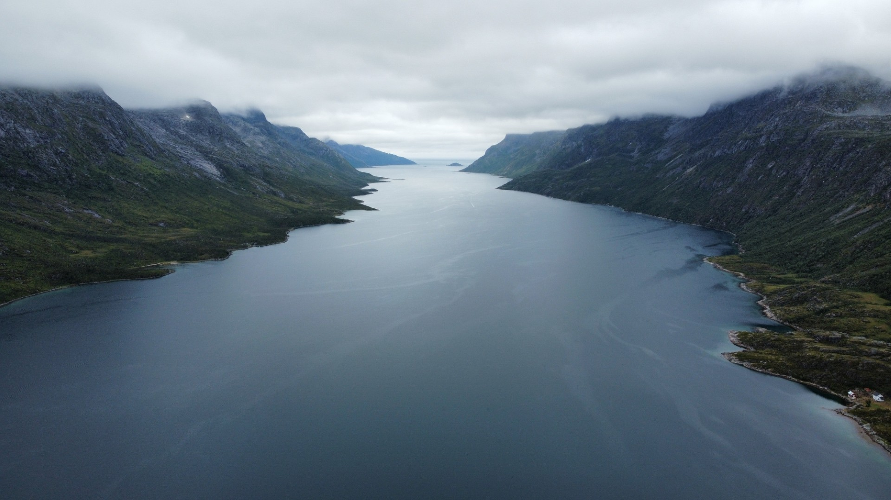

Into the Wild
ERSFJORD · KVALØYA · NORWAY
Hay paisajes que parecen ajenos al paso del tiempo. Lugares donde las carreteras desaparecen, los asentamientos humanos escasean y la naturaleza sigue imponiendo su presencia. Muy por encima del Círculo Polar Ártico, en la isla de Kvaløya, cerca de Tromsø, las aguas del Ersfjord se adentran profundamente en la costa noruega, dando forma a uno de los paisajes de fiordos más espectaculares del norte de Noruega.
Captada desde el aire con un dron DJI Mini 2, esta imagen sobrevuela un territorio modelado por el hielo, las montañas y el mar. Desde la distancia transmite una sensación de calma absoluta, aunque su existencia es el resultado de inmensas fuerzas geológicas que actuaron durante millones de años.

La puerta de entrada al Ártico
Ersfjord se encuentra en la costa occidental de Kvaløya, una isla cuyo nombre significa literalmente «Isla de las Ballenas». Situado a poca distancia por carretera de Tromsø, este fiordo está considerado uno de los más fotogénicos y accesibles del norte de Noruega.
A diferencia de los célebres fiordos turísticos del oeste del país, Ersfjord conserva un ambiente tranquilo y poco concurrido. Aquí el visitante descubre un paisaje ártico mucho más íntimo, donde las montañas se elevan casi directamente desde el mar y los pequeños asentamientos humanos parecen diminutos frente a la inmensidad de su entorno.
El fiordo se adentra profundamente en Kvaløya, formando un corredor natural entre el océano y las montañas. Sus laderas escarpadas y sus estrechas aguas revelan el extraordinario poder de los glaciares que dominaron esta región durante la última Edad de Hielo.
Un paisaje esculpido por el hielo
La espectacular silueta de Ersfjord no fue creada únicamente por los ríos o la erosión. Como ocurre con muchos fiordos noruegos, debe su existencia a los inmensos glaciares que ocuparon este territorio hace miles de años.
A medida que avanzaban y retrocedían, aquellas enormes masas de hielo excavaron la roca ancestral, profundizando los valles y creando el característico perfil en forma de U que hoy define a los fiordos. Cuando finalmente el hielo se retiró, el agua del mar inundó esos valles, dando origen a los impresionantes paisajes que hoy atraen a fotógrafos y exploradores de todo el mundo.
La geología que rodea Ersfjord resulta especialmente fascinante. Algunas de las rocas presentes en esta región forman parte de las estructuras geológicas más antiguas de Noruega, con un origen que se remonta a miles de millones de años.
Las montañas que abrazan el fiordo
Uno de los rasgos más característicos de Ersfjord es la cadena montañosa que lo rodea. Sus empinadas laderas forman un auténtico anfiteatro natural en torno al fiordo, modelando tanto el paisaje como las condiciones meteorológicas.
A lo largo del año estas cumbres cambian de aspecto de forma constante. Durante el verano, la vegetación asciende hasta cotas sorprendentemente elevadas bajo la luz ininterrumpida del Sol de Medianoche. En invierno, la nieve y el hielo transforman el paisaje en un mundo casi monocromático dominado por los blancos, los azules y los tonos grises.
Las montañas no son un simple telón de fondo. Marcan el ritmo de la vida en este lugar. Modulan la luz, protegen el fiordo de la fuerza del océano abierto y ofrecen refugio a una fauna perfectamente adaptada a algunas de las condiciones más extremas de Europa.
{kind=link}

El silencio del norte
Quizá lo más extraordinario de Ersfjord no sea lo que se contempla, sino lo que se siente.
Lejos de las ciudades y de las grandes carreteras, el fiordo transmite una inusual sensación de escala. La presencia humana parece insignificante. Las distancias se agrandan. El paisaje reclama toda la atención.
Esa sensación de aislamiento ha marcado durante siglos la vida de las comunidades del norte de Noruega. Pueblos pesqueros, asentamientos estacionales y viajeros del Ártico han dependido siempre de estas aguas, adaptando su existencia al ritmo del mar y a los extremos cambios estacionales del norte.
Incluso hoy, hay momentos en los que Ersfjord parece permanecer prácticamente ajeno al mundo moderno.
«Visto desde el cielo, el fiordo nos recuerda lo pequeños que somos frente a los paisajes que nos rodean.»
Una perspectiva reservada al cielo
Esta imagen fue capturada con un dron DJI Mini 2 suspendido sobre el fiordo durante una jornada de calma en el Ártico.
La perspectiva aérea transforma por completo el paisaje. Elementos que desde tierra parecen desconectados pasan a formar parte de una única composición. Montañas, costa y agua se funden en un gran relato geográfico que solo puede apreciarse en toda su magnitud desde el aire.
Desde esta altura, la verdadera escala del Ártico se hace evidente. Las carreteras se diluyen en el terreno. La actividad humana pasa a un segundo plano. La naturaleza recupera todo el protagonismo.
Es una perspectiva que revela no solo la belleza de Ersfjord, sino también el carácter salvaje que sigue definiendo el norte de Noruega.
Hacia lo salvaje
El título de esta historia resume la sensación que experimenté mientras fotografiaba este paisaje.
No era una sensación de peligro. Ni de aventura. Sino de humildad.
Contemplar un fiordo modelado por glaciares, rodeado de montañas más antiguas que la propia historia de la humanidad y bajo un cielo que cambia de aspecto a cada instante hace imposible no sentirse conectado con algo mucho más grande que uno mismo.
Ersfjord nos recuerda que todavía existen lugares verdaderamente salvajes. Lugares donde la naturaleza sigue marcando las reglas y donde la belleza no se mide por monumentos o ciudades, sino por el silencio, la inmensidad y el tiempo.
Artículos relacionados
Continúa explorando Noruega en Entre el mar y la piedra. Un reportaje fotográfico que descubre otra de las caras del paisaje noruego.
Ficha fotográfica
Ubicación: Ersfjord, Kvaløya, Noruega
Ciudad más cercana: Tromsø
Aeronave: DJI Mini 2
Categoría: Fotografía aérea
Fotógrafo: Carles Torres